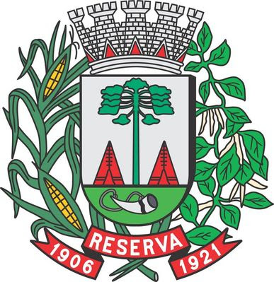

As Origens da Agricultura
A agricultura começou com comunidades nômades que passaram a cultivar a terra e domesticar animais, permitindo o crescimento de assentamentos permanentes e a formação de sociedades complexas.

A Revolução Agrícola
Durante o Neolítico, a Revolução Agrícola trouxe avanços tecnológicos que aumentaram a produtividade e possibilitaram a formação das primeiras cidades, marcando uma mudança significativa na forma de viver.

A Urbanização e a Agricultura
Com o crescimento das cidades, a agricultura se intensificou e se industrializou para atender a uma demanda urbana crescente. A expansão urbana trouxe desafios para a agricultura, exigindo práticas mais sustentáveis.
O Futuro da Agricultura
No cenário atual, a agricultura está se adaptando à urbanização com inovações tecnológicas e práticas sustentáveis, como a agricultura vertical e hortas urbanas, para garantir a segurança alimentar e a qualidade de vida.